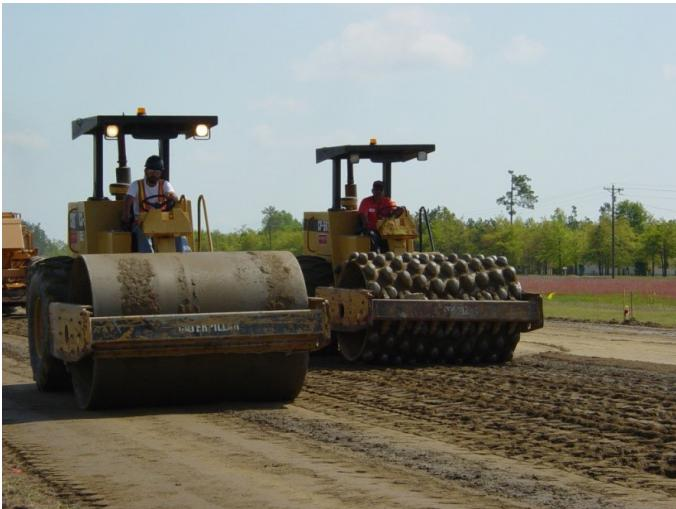
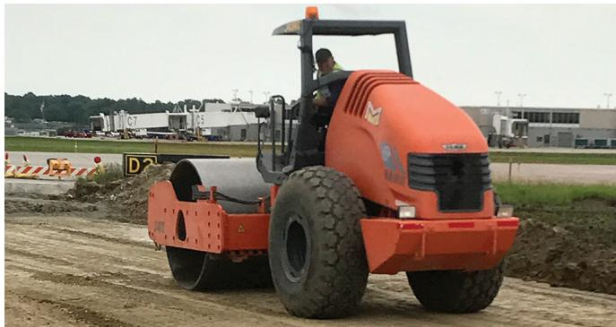
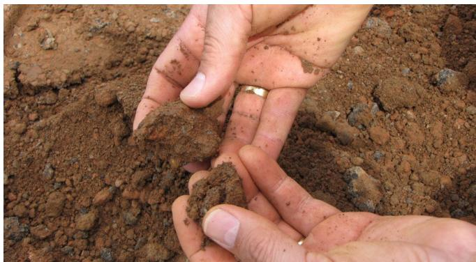
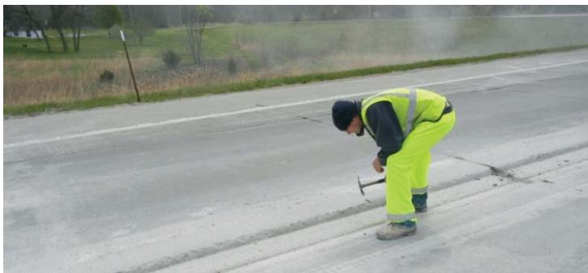

Equipment Inspection and Compliance
Equipment Inspection and Compliance is a quality‑control process that evaluates and controls the condition, capability, calibration, and functional performance of all construction equipment used in pavement repair and preservation projects, requiring contractors to demonstrate that each unit meets or exceeds owner‑specified operational criteria before it is placed in service [3] [5]. The procedure mandates a pre‑start inspection of every machine—verifying critical components such as cutting teeth, spray bars, nozzles, sand‑blasting rates, air‑compressor pressure and filtration, water‑blast flow, weight, horsepower, and depth‑control devices—and halts work until any deficiencies are corrected and approved [6] [7]. By confirming that equipment operates within contract‑specified tolerances for parameters such as load, pressure, flow, mixing timing, compaction density, and groove geometry, the process prevents construction‑related problems, safeguards long‑term pavement performance, and ensures safety throughout the project [8] [11].
Sources (11)
Purpose and quality objectives
Equipment Inspection and Compliance evaluates and controls the condition, capability, calibration, and functional performance of all construction equipment used in repair and preservation projects. The guides require that before a piece of machinery is placed in service the contractor must demonstrate to the owner or field representative that it meets or exceeds the owner‑specified criteria, confirming operational readiness and compliance with contract‑specified parameters such as weight, horsepower, pressure, flow, feed rate, cleaning effectiveness, groove geometry, cement content, application rate, mixing depth, compaction quality, moisture levels, and curing performance. A pre‑start inspection of every unit is mandated, verifying that critical components are intact and functioning; work cannot proceed until any deficiencies are corrected and approved. “Equipment Inspection and Compliance controls the performance characteristic of field equipment by requiring the contractor to prove that each piece of equipment intended for the FDR process satisfies or surpasses the owner‑specified criteria before it is placed in service on the construction site.” “Ensuring that construction equipment is in good working order helps avoid construction-related problems”. “Equipment Inspection and Compliance evaluates and controls the condition, capability, calibration, and functional performance of all construction equipment used in repair and preservation projects, ensuring each unit conforms to contract‑specified operational criteria and safety requirements.” “The inspector should verify that all cutting teeth of the reclaimer are in place and in good condition, the spray bar and nozzles are working properly and not clogged, the onboard stabilizing agent system is functioning and accurate, and the water application rate is correct.” [3][5][6][7][8][11]
[3] — Ch. 7 (pp. 87–89); [5] — Equipment Inspections (p. 32), Other Equipment (p. 33), Verify the following: (p. 32); [6] — Ch. 5 (p. 120), Ch. 6 (pp. 158–159), Ch. 8 (pp. 199–207), Ch. 9 (pp. 222–252); [7] — Ch. 5 (p. 45); [8] — Ch. 6 (p. 56); [11] — Ch. 5 (pp. 104–106), Ch. 6 (p. 132), Ch. 8 (p. 170), Ch. 9 (p. 189), Ch. 10 (p. 207)
Prior to using field equipment on the construction site, it is important for the contractor to demonstrate to the owner/owner’s field representative that the equipment to be used for the FDR process meets or exceeds the following criteria: Equipment inspection and compliance is required to confirm that every piece of construction machinery is fit for service and meets contract‑specified capacities before work begins. Equipment Inspection and Compliance is intended to guarantee that all contractor‑owned plant, equipment, and machinery are verified as fully functional, properly calibrated, scaled, controlled and adjusted before construction begins and throughout the project. Equipment Inspection and Compliance is a core quality‑control step that verifies every piece of machinery meets contract‑specified performance and safety criteria before work begins. These shared requirements ensure that key performance parameters—such as media‑blasting rates, oil/moisture trap condition, air‑compressor pressure and volume, weight, horsepower and blade configuration of diamond‑grinding machines, and the presence of depth‑control devices on grooving equipment—are verified against contract documents. By confirming that each unit operates within acceptable tolerances, the inspection prevents a range of potential problems, including insufficient pulverization or surface cleaning depth, incorrect sand or water‑blast rates, contaminated airstreams, substandard compaction density, misaligned or shallow grooves, uneven texture, and unsafe operating conditions that could compromise repair performance, pavement durability, or worker safety. [3][5][6][7][8][11]
[3] — Ch. 7 (pp. 87–89); [5] — Equipment Inspections (p. 32), Other Equipment (p. 33), Verify the following: (p. 32); [6] — Ch. 5 (p. 120), Ch. 6 (pp. 158–159), Ch. 8 (pp. 199–207), Ch. 9 (pp. 222–252); [7] — Ch. 5 (p. 45); [8] — Ch. 6 (p. 56); [11] — Ch. 5 (pp. 104–106), Ch. 6 (p. 132), Ch. 8 (p. 170), Ch. 9 (p. 189), Ch. 10 (p. 207)
Scope and applicability
Equipment Inspection and Compliance is required for any machinery used in pavement‑repair and surface‑treatment work. The guides state that the procedure applies to all materials and activities involved in a full‑depth reclamation (FDR) treatment, including the existing asphalt pavement and underlying base, the stabilizing cement, water, additives, and any surrounding structures such as curbs and manholes. Inspectors must verify each construction process—pulverization depth, gradation, moisture content, cement spread rates, mixing homogeneity, compaction density, grading profile, finish‑rolling condition, microcracking parameters, and curing application—to ensure they meet the contract specifications and accepted tolerances such as a minimum 6 in. longitudinal joint overlap, a minimum 2 ft. transverse joint overlap, mixing initiation within 30 minutes of cement placement and not exceeding 60 minutes after water contact, and proper moisture maintenance throughout. The requirement also covers any equipment used during partial‑depth repair work, regardless of the specific pavement materials or components involved in those repairs, and it is triggered whenever sand‑blasting, air‑compressor cleaning, or water‑blasting operations are performed on a project. It applies to both partial‑depth repairs (PDRs) and full‑depth repairs (FDRs), regardless of the pavement material—concrete or asphalt—being restored, and extends to related preparation activities such as media‑blasting, air‑compressor cleaning, water‑blasting, dowel‑bar retrofit/slot‑stitching, drilling/tie‑bar placement with epoxy injection, and diamond grinding of concrete pavements. Equipment inspection and compliance also applies to diamond‑grooving operations on concrete pavements and bridge decks before construction begins. For soil‑cement stabilization (CSS) work performed on a stripped subgrade—whether the site has been cleared of vegetation or existing pavement—and when unstable zones are identified during proof rolling, all related equipment such as the reclaimer cutting teeth, spray bar, nozzles, bulk spreader, and water‑application system must be inspected and calibrated. The procedure is required for all pavement‑related construction activities that involve machinery or tools, including partial‑depth repairs, full‑depth repairs, slot‑sawing, concrete removal, sandblasting of slots, subbase compaction, dowel‑bar drilling, diamond grinding, and associated air‑powered equipment. It must be performed before work begins (or during specific steps such as patch‑area cleaning) to verify that each piece of equipment is in proper working order and conforms to contract‑specified performance criteria for weight, horsepower, configuration, pressure/flow capacity, filter or moisture trap functionality, and calibration. Accordingly, the scope covers the materials and components involved—concrete pavement, repair mixes, grout, sandblasting media, subbase material, dowel‑bars, profiling equipment, and ancillary items such as steel probes, grout‑application brushes, and certified technicians. [3][5][6][7][11]
[3] — Ch. 7 (pp. 88–89); [5] — Equipment Inspections (p. 32), Verify the following: (p. 32); [6] — Ch. 5 (p. 120), Ch. 6 (pp. 158–159), Ch. 8 (pp. 199–207), Ch. 9 (pp. 222–226); [7] — Ch. 5 (p. 45); [11] — Ch. 5 (pp. 105–106), Ch. 6 (p. 132), Ch. 8 (p. 170), Ch. 9 (p. 189)
Test methods and procedures
The equipment‑inspection and compliance process is organized as a sequential checklist that begins with site preparation (proof‑rolling, utility marking) and proceeds through verification of each piece of machinery before it is placed in service. First, cleaning and surface‑preparation tools are checked: sand‑blasting units must be set to the contract‑specified sand feed rate and verified to have functional oil/moisture traps; air compressors are tested for both pressure and volume capability and their filtration systems inspected by passing airflow over a board and examining for contaminants. When water‑blasting is employed, pump output is measured to confirm flow and pressure meet contractual limits.
For cementitious stabilization work, the mixing equipment is inspected to ensure that cement spread rates, water addition, and start‑up timing (mixing within 30 min of placement, not exceeding 60 min) comply with specifications. Compaction rollers and scrapers are examined for proper operating weight, water systems, and tire condition before each lift. In‑place density is verified using a nuclear gauge in direct‑transmission mode to the full depth of the stabilized layer, and moisture content is determined by microwave oven, direct heating, or other ASTM‑approved procedures. Field density testing is performed throughout construction in accordance with approved AASHTO or ASTM methods.
Diamond‑grinding projects require inspection of the grinding machine for contract‑specified weight, horsepower, blade configuration, wheelbase, and cutting‑head blade spacing; the vacuum assembly must be functional to leave a near‑dry surface. The inertial profiling unit is calibrated on a comparable diamond‑ground texture following manufacturer recommendations before profile measurements are taken by certified operators. During grinding, passes are run parallel to the centreline, depth continuity is kept within 0.12 in., shoulder ridges are limited to 0.19 in., and cross‑slope deviation does not exceed 0.25 in. per 12 ft as measured with a straightedge.
Compaction equipment such as plate compactors and gang drills are operated to confirm they can achieve required sub‑base densities and, for dowel‑bar drilling, that the drill is calibrated, aligned, and sufficiently heavy/powerful. All equipment is calibrated according to manufacturer recommendations and documented training or certification is verified before work proceeds. The final step prior to opening to traffic includes a walk‑through and proof roll to locate any soft spots, confirm temporary markings are in place, and ensure that finish rolling has been performed in static mode without surface damage. [3][5][6][7][11]
The following figure illustrates the final compaction process using specific heavy machinery.

Final compaction of FDR base with a tamping roller (right) and a smooth-wheeled vibrating roller [3]The image displays two large yellow construction rollers operating side-by-side on a dirt surface, identified as a smooth-wheeled vibrating roller on the left and a tamping roller with multiple protruding pads on the right.
[3] — Ch. 7 (pp. 88–89); [5] — Verify the following: (p. 32); [6] — Ch. 5 (p. 120), Ch. 9 (pp. 222–223); [7] — Ch. 5 (p. 45); [11] — Ch. 5 (pp. 105–106), Ch. 6 (p. 132), Ch. 9 (p. 189)
Valid equipment inspection across construction projects rests on three interrelated pillars—calibration of the equipment, qualified operators, and control of the work environment. Calibration must follow prescribed methods, manufacturer recommendations, and contract documents; measurement devices such as density gauges are required to operate in direct‑transmission mode through the full depth of the stabilized layer and moisture content must be determined with ASTM‑approved procedures, while mechanical units—including sandblasting equipment, gang drills, volumetric mixers, motor graders, vibratory rollers, and air compressors—must be set to contract‑specified rates, pressures, alignments, size, speed, and amplitude limits and verified through routine checks. Access to all non‑proprietary plant and machinery must be maintained so that calibration, scales, controls, and operating adjustments can be inspected at any time.
Operator qualifications are addressed variably: some sources require no specific certification beyond confirming that equipment follows calibrated settings, whereas others mandate that personnel performing measurements, concrete testing, abrasive cleaning, or profilograph operation hold the training and certification documented in the contract.
Environmental controls are equally essential. Surface moisture must be continuously monitored and water applied as needed to keep materials at optimum moisture and protect treated mats from drying out or over‑working. Air streams for dust removal or blasting must be free of contaminants; this is verified by passing the stream over a board to detect oil or water, and equipment such as sandblasting units and compressors must employ functioning oil/moisture traps and approved air‑purification devices. [3][6][8][11]
[3] — Ch. 7 (pp. 88–89); [6] — Ch. 5 (p. 120), Ch. 6 (p. 159), Ch. 8 (pp. 199–207), Ch. 9 (p. 222); [8] — Ch. 6 (p. 56); [11] — Ch. 5 (pp. 105–106), Ch. 6 (p. 132), Ch. 8 (p. 170), Ch. 9 (p. 189)
Sampling and testing frequency
Equipment inspection determines sampling locations by targeting any point where conditions are likely to vary—along curbs, around manholes, at longitudinal and transverse joints, wherever the pulverization depth is altered or equipment pauses, and also in zones that roll as unstable during proof‑rolling. “Unstable areas identified during the proof rolling should be evaluated by the contractor and geotechnical consultant to determine the depth of treatment required.” “Samples of the unstable material should be obtained for laboratory testing at this time to determine the percentage of cement required for stabilization.” The number of tests is linked to each depth change, any idle period, and to every compacted lift; “Take a depth check anytime the depth changes or if the equipment sits idle.” Application rates are verified by periodically measuring the cement spread: “Check application rates are correct by periodically measuring the cement spread.” Density and moisture tests are performed on a regular basis—typically every 5,000 ft² (465 m²) for each lift: “Density and moisture tests should be performed on a regular basis (for example, every 5,000 ft2 [465 m2]) for each compacted lift of material.” When a nuclear gauge is used, it must be operated in direct transmission mode through the full depth of the stabilized layer: “If a nuclear gauge is used to determine in-place density, conduct tests in the direct transmission mode to the full depth of the stabilized layer.” Moisture content should be measured using microwave‑oven, direct heating, or established ASTM procedures rather than relying on the nuclear gauge: “The moisture content should be taken using microwave oven, direct heating, or established ASTM procedures instead of relying on the nuclear gauge.” All testing frequencies are driven by these triggers and are scheduled to fall within contract‑specified windows (e.g., within the 30‑minute placement window and no later than 60 minutes before mixing). [3][7]
[3] — Ch. 7 (pp. 88–89); [7] — Ch. 5 (p. 45)
To obtain representative data, inspectors select measurements whenever a condition that could affect performance changes. They “Take a depth check anytime the depth changes or if the equipment sits idle,” and they “Verify the pulverized material is consistent with samples/cores provided for the mix design.” Application rates are confirmed by “Check application rates are correct by periodically measuring the cement spread,” while in‑place density is measured with a nuclear gauge operating “If a nuclear gauge is used to determine in-place density, conduct tests in the direct transmission mode to the full depth of the stabilized layer.” When unstable zones are identified, “Samples of the unstable material should be obtained for laboratory testing at this time.” A systematic program of field checks is applied to each compacted lift, with “Density and moisture tests should be performed on a regular basis (for example, every 5,000 ft2 [465 m2]) for each compacted lift of material,” and all “Field density testing should be performed during construction in accordance with approved AASHTO or ASTM methods.” [3][7]
[3] — Ch. 7 (pp. 88–89); [7] — Ch. 5 (p. 45)
Acceptance criteria and tolerances
The guides require that equipment be accepted only when every contract‑specified numerical limit, statistical tolerance, or visual condition is met. Joint integrity is confirmed by “Check that longitudinal joints overlap a minimum of 6 in.” and “Check that transverse joints overlap a minimum of 2 ft.” Cement work must begin within the allotted window – “Ensure that the time after initial contact of cement with water does not exceed 60 minutes. Mixing operations should begin within 30 minutes of placement of the cement.” Sand‑blasting units, air compressors and any water‑blasting gear are set to the contract rates; acceptance is documented by “Sand blasting unit is adjusted for correct sand rate” and by confirming that “the air stream … contains no water or oil prior to use by passing the stream over a board and examining for contaminants.” Hand tools are limited by weight and size – “maximum rated weight of 30 lb” for jackhammers and “≤1 in. in diameter” for vibrators. Drill‑bit shanks must exceed tie‑bar diameters by “typically 0.25 to 0.38 in.” Diamond‑ground surfaces are measured against dimensional tolerances: ridges no greater than “0.19 in.”, successive passes may not differ by more than “0.12 in.”, and cross‑slope deviations must stay within “0.25 in. per 12 ft when measured with a 12‑ft straightedge.” All compactors, gang drills, vacuum units and related equipment must pass functional verification before work proceeds. [3][5][6][11]
[3] — Ch. 7 (pp. 88–89); [5] — Verify the following: (p. 32); [6] — Ch. 6 (p. 159), Ch. 8 (pp. 199–207), Ch. 9 (p. 223); [11] — Ch. 5 (pp. 105–106), Ch. 8 (p. 170)
Inspectors check each grinding pass against the contract tolerances, confirming that the texture depth does not differ from the prior pass by more than the permitted amount (about 0.12 in) and that cross‑slope deviations stay within 0.25 in over a 12‑ft straightedge; they also verify that overlap between passes is limited to the contract‑specified amount. By measuring every individual result and comparing successive applications, variability is directly controlled, while the guide does not call for averaging results across a lot. [6]
The following figure illustrates the diamond-grooved concrete pavement and its typical grooving dimensions.
 Diamond-grooved concrete pavement showing typical grooving dimensions [6]
Diamond-grooved concrete pavement showing typical grooving dimensions [6]
The image displays a close-up view of a concrete surface featuring closely spaced longitudinal diamond grooves, with a ruler placed across the texture to indicate scale.
[6] — Ch. 9 (p. 223)
Quality control and process monitoring
During production and construction the inspection program continuously verifies that the depth of pulverization meets the depth specified in the contract documents, that material density/compaction satisfies specification requirements, and that longitudinal joints overlap a minimum of 6 in. Finish rolling is confirmed to be performed in static mode without damaging the surface. Cement content, application rate, moisture content, mixing depth, compaction and curing are all checked against project specifications; equipment is inspected before cement placement, field density testing follows approved AASHTO/ASTM methods, and mixing must start within 30 minutes of cement placement and be completed before sixty minutes elapse. Sand‑blasting units are adjusted for the correct sand rate and equipped with properly functioning oil/moisture traps; media‑blasting units are similarly set to the correct rate with functional filtration. Air compressors are verified to have sufficient pressure and volume capabilities to clean the repair area in accordance with contract specifications, and they must be equipped with effective oil and moisture filters—verification can be performed by passing the airstream over a board and examining for contaminants. When water‑blasting is used, its volume and pressure must meet contract limits. Plate compactors are checked to ensure proper operation and capability to achieve required sub‑base density. Volumetric mixing equipment is kept in good condition and calibrated regularly to maintain correct mix proportions, while vibrators must match the size specified in the contract documents and operate correctly. Diamond grinding machines are inspected for compliance with contract‑specified weight, horsepower, blade configuration, effective wheelbase, and blade spacing; they must include a vacuum assembly capable of removing concrete slurry, produce texture depths that do not vary more than 0.12 in between passes, and maintain finished cross‑slope within the tolerance of 0.25 in per 12 ft. Inertial profiling units are calibrated according to manufacturer recommendations on comparable surfaces. Grooving equipment must possess a depth‑control device for adjusting cutting head height, be capable of maintaining alignment with the roadway centreline, and install grooves at the dimensions and spacing shown in the plans. Slot‑sawing machines are required to have sufficient weight, horsepower and configuration to cut the specified number of slots per wheel path to the plan depth. Gang drills are calibrated, aligned, and sufficiently heavy and powerful for dowel‑bar hole production; appropriate fixtures ensure correct angle, size and depth, and drill bits must be oversized by 0.25–0.38 in relative to tie bars. Vacuum equipment used with drilling must function properly. Jackhammers are limited to a maximum rated weight of 30 lb (14 kg). Engineers retain continuous access to verify calibration of scales, controls and operating adjustments, and all test equipment—including profilographs or pavement profilers—is calibrated per manufacturer guidance and operated by certified personnel, with concrete cylinders stored on‑site. OSHA safety requirements are observed throughout drilling operations. [3][5][6][7][8][11]
The following figure illustrates the proper procedures for mixing and compacting cement and subgrade.

Compacting cement-stabilized subgrade with a vibratory roller. [7]The image displays an orange construction vehicle, specifically a single-drum vibratory roller, operating on a dirt surface to compact the ground.
[3] — Ch. 7 (pp. 88–89); [5] — Verify the following: (p. 32); [6] — Ch. 5 (p. 120), Ch. 6 (p. 159), Ch. 8 (pp. 199–207), Ch. 9 (pp. 222–226); [7] — Ch. 5 (p. 45); [8] — Ch. 6 (p. 56); [11] — Ch. 5 (pp. 105–106), Ch. 6 (p. 132), Ch. 8 (p. 170), Ch. 9 (p. 189)
The guides concur that any trend or deviation beyond the contract‑specified limits must initiate an immediate process adjustment or additional testing. Depth‑related observations such as a shift in pulverization depth, equipment idle periods, or moisture content outside the optimum range trigger “Take a depth check anytime the depth changes or if the equipment sits idle.” and require “Determine the moisture content of the initial pulverized material to determine if an adjustment is needed to reach or maintain optimum moisture.” Changes in cement spread rate are addressed by “Notify the engineer anytime the cement application rate is changed.” and must be recorded before work proceeds. When density verification does not meet specifications, the requirement is “If a nuclear gauge is used to determine in-place density, conduct tests in the direct transmission mode to the full depth of the stabilized layer.
Equipment performance checks are similarly mandated. Sand‑blasting units must be set correctly; the guides state both “Sand blasting unit is adjusted for correct sand rate and is equipped with and uses properly functioning oil/ moisture traps.” and “Verify that the sandblasting unit is adjusted for correct sand rate and that it is equipped with and using properly functioning oil/moisture traps.” Air compressors are required to deliver contract‑required pressure and volume, expressed as “Verify that air compressors have sufficient pressure and volume capabilities to clean the repair area adequately in accordance with contract specifications.” and “Verify that air compressors have sufficient pressure and volume capabilities to clean patch area adequately in accordance with contract specifications.” Their filtration systems must function; the guides note “Verify that air compressors are equipped with and using properly functioning oil and moisture filters/ traps.” and additionally “Verify that air compressors are equipped with and using properly functioning oil and moisture filters/traps. This can be accomplished by passing the air stream over a board, and then examining for contaminants.” Water‑blasting equipment must meet volume and pressure limits: “Verify that the volume and pressure of water-blasting equipment (if used) meets the contract specifications.” and “Verify that the volume and pressure of waterblasting equipment (if used) meets the specifications.
Grinding operations are governed by several dimensional tolerances; deviations such as a ridge exceeding 0.19 in., depth differences greater than 0.12 in., or cross‑slope variations beyond 0.25 in. per 12 ft trigger corrective measures, reflected in “leaving no more than a 0.19 in. ridge”, “depth of the previous application by more than the amount permitted in the contract documents, typically 0.12 in.”, and “no depressions or misalignment in slope greater than 0.25 in. per 12 ft”. Additionally, any raveling, aggregate fracture, or joint disturbance requires “Verify that the grinding equipment does not cause raveling, aggregate fractures, or disturbance to the joints.”.
Proof‑rolling findings also demand action: “Unstable areas identified during the proof rolling should be evaluated by the contractor and geotechnical consultant to determine the depth of treatment required.” Pre‑construction inspections are mandatory; both “Before cement is applied to the subgrade, all equipment should be inspected.” and “Before start-up, the contractor’s equipment shall be carefully inspected.” must be completed, and any malfunction halts work until corrected and approved. Cement application monitoring is reinforced by “During cement application, the application rate should be monitored for accuracy.” Field density or moisture results outside approved limits trigger repeat testing: “Field density testing should be performed during construction in accordance with approved AASHTO or ASTM methods to confirm that the project specifications are being met.
Collectively, these observed trends—depth changes, idle time, moisture shifts, rate variations, equipment performance shortfalls, grinding tolerances, instability detections, and out‑of‑spec density/moisture readings—constitute the triggers for process adjustments or additional testing across the equipment inspection and compliance domain. [3][5][6][7][8][11]
[3] — Ch. 7 (pp. 88–89); [5] — Verify the following: (p. 32); [6] — Ch. 5 (p. 120), Ch. 9 (p. 223); [7] — Ch. 5 (p. 45); [8] — Ch. 6 (p. 56); [11] — Ch. 5 (pp. 105–106)
Nonconformance and corrective action
Equipment inspection requires a pre‑start‑up review of all contractor machinery; if any item is found not to operate correctly, work must be halted. The identified deficiencies must be remedied and the corrective actions must receive formal approval from the engineer before any further construction can resume. [8]
[8] — Ch. 6 (p. 56)
Documentation and reporting
The equipment‑inspection file must contain a complete set of records that verify each piece of preparation, grinding, stabilization or blasting equipment is configured, calibrated and operating in strict accordance with contract specifications. Verification includes statements such as “Verify that the media-blasting unit is adjusted for the correct rate and that it is equipped with and using properly functioning oil/moisture traps.” and “Verify that the sandblasting unit is adjusted for correct sand rate and that it is equipped with and using properly functioning oil/moisture traps.” Air‑compressor performance must be documented, for example “Verify that air compressors have sufficient pressure and volume capabilities to clean the repair area adequately in accordance with contract specifications” and the parallel requirement “Verify that air compressors have sufficient pressure and volume capabilities to clean patch area adequately in accordance with contract specifications.” Filter and trap condition is recorded by either a cloth test (“Verify that air compressors are equipped with and using properly functioning oil and moisture filters/ traps. (This can be accomplished by placing a cloth over the air compressor nozzle and visually inspecting for oil.)”) or a board‑test (“Verify that air compressors are equipped with and using properly functioning oil and moisture filters/traps. This can be accomplished by passing the airflow over a board, and then examining for contaminants.”). Water‑blasting equipment flow and pressure are logged as required (“Verify that the volume and pressure of water-blasting equipment (if used) meets the contract specifications”; “Verify that the volume and pressure of waterblasting equipment (if used) meets the specifications”).
Diamond‑grinding machinery records must confirm weight, horsepower, blade configuration and wheelbase (“Verify that the diamond grinding machine meets the requirements of the contract documents for weight, horsepower, blade configuration, and effective wheelbase.”) as well as the simplified version (“Verify that the diamond grinding machine meets requirements of the contract documents for weight, horsepower, and configuration.”). Blade spacing capable of producing the required corduroy texture is documented (“Verify that the blade spacing on the diamond grinding cutting head meets the requirements of the contract documents and can produce the desired corduroy texture.”; “Verify that the blade spacing on the diamond‑grinding cutting head meets the requirements of the contract documents.”). Vacuum effectiveness is recorded (“Verify that the equipment has an effective means of vacuuming the grinding residue from the pavement, leaving the surface in a clean, near-dry condition.”).
Profiling or pavement‑profiling devices must be calibrated per manufacturer guidance on comparable surfaces (“Verify that the inertial profiling unit has been calibrated in accordance with its manufacturer’s recommendations and contract documents; calibration should be conducted on a similarly diamond‑ground texture.”; “Verify that the unit has been calibrated in accordance with manufacturer’s recommendations and contract documents.”) and operator training or certification is noted (“Verify that the profilograph operator meets the requirements of the contract documents for training/certification.”).
Stabilization equipment inspections include reclaimer cutting teeth, spray bar/nozzles, stabilizing‑agent system and water rate (“Before cement is applied to the subgrade, all equipment should be inspected. The inspector should verify that all cutting teeth of the reclaimer are in place and in good condition, the spray bar and nozzles are working properly and not clogged, the onboard stabilizing agent system is functioning and accurate, and the water application rate is correct.”) and bulk‑spreader calibration when used (“If a bulk spreader is used, it should be properly calibrated (ARRA 2013).”).
Test results recorded in the file cover critical tolerances for grinding (“no more than a 0.19 in. ridge”, “does not vary from the depth of the previous application by more than the amount permitted in the contract documents, typically 0.12 in.”, “no depressions or misalignment in slope greater than 0.25 in. per 12 ft”) and field density/moisture testing at prescribed intervals (“Field density testing should be performed during construction in accordance with approved AASHTO or ASTM methods to confirm that the project specifications are being met.”). Laboratory test results from sampled unstable material determine cement content for stabilization (“Samples of the unstable material should be obtained for laboratory testing at this time to determine the percentage of cement required for stabilization.”).
Any non‑conforming condition—equipment malfunction, out‑of‑tolerance measurement or procedural lapse—is logged as a corrective‑action entry that details the deficiency and remedial steps (e.g., adjusting sand rate, repairing filters, recalibrating equipment, replacing components, contractor or geotechnical consultant evaluation of treatment depth, repeat testing) together with the date of resolution before work may resume. [6][7][11]
[6] — Ch. 5 (p. 120), Ch. 9 (pp. 222–223); [7] — Ch. 5 (p. 45); [11] — Ch. 5 (pp. 105–106), Ch. 9 (p. 189)
Relationship to long-term performance
Inspection of each construction step—verifying that pulverization reaches the contract‑specified depth, that the pulverized material meets gradation and moisture targets, that cement spread rates and mixing times stay within the limits (e.g., cement‑water contact not exceeding 60 min and mixing begun within 30 min), that compaction density is confirmed with a nuclear gauge in direct transmission mode, and that joint overlaps are at least 6 in. longitudinally and 2 ft. transversely—provides measurable evidence that the FDR layer will achieve its designed strength and resist cracking or rutting over its service life. Maintaining optimum moisture during grading and curing, and performing prescribed pre‑cracking with correct roller size, speed and amplitude, further ensures a homogeneous, well‑cured mat whose durability matches contract requirements. [3]
The following figure illustrates the hand-squeeze moisture test used to verify that materials meet the specified moisture targets during inspection.

Hand-squeeze moisture test [3]The image shows a pair of hands holding and squeezing clumps of brown, granular soil against a background of loose earth.
[3] — Ch. 7 (pp. 88–89)
After construction is complete, the inspection and engineering teams conduct a series of follow‑up checks to verify that both the finished surfaces and the associated equipment continue to meet contract specifications. The surface verification includes walking the entire length and width of the FDR surface to ensure it has hardened with no soft spots, then proof rolling the surface to confirm it can support light traffic, confirming that temporary pavement markings required by the contract documents are in place, and ensuring initial traffic does not impair material curing. For any repaired concrete patches, inspectors must have a steel chain, rod, or hammer available to check for unsound concrete around the patch area and keep grout‑application brushes (if necessary) on hand for immediate remedial work. Ongoing equipment compliance requires unrestricted access to all non‑proprietary plant, equipment, and machinery so that calibration, scales, controls, and operating adjustments can be re‑checked; this access is mandated at all times for inspection and calibration. Specific equipment checks include verifying that the sandblasting unit is adjusted for the correct sand rate and equipped with functioning oil/moisture traps, confirming air compressors provide sufficient pressure and volume and that their oil and moisture filters/traps are operating properly by passing the airflow over a board and inspecting for contaminants, and ensuring water‑blasting equipment meets specified flow and pressure limits. [3][5][8][11]
The following figure illustrates the proper technique for sounding concrete patches with a hammer to detect unsound areas.

Worker performing a hammer test on concrete pavement. [5]A worker in high-visibility safety gear is bent over, striking the surface of a paved road with a hand tool to check for defects.
[3] — Ch. 7 (pp. 88–89); [5] — Other Equipment (p. 33); [8] — Ch. 6 (p. 56); [11] — Ch. 5 (pp. 105–106)
References
- Guide to FULL-DEPTH RECLAMATION (FDR) with Cement ·
Guide_to_FDR_with_Cement_Jan_2019_reprint - PDR_guide_Apr2012 ·
PDR_guide_Apr2012 - Concrete Pavement Preservation Guide (Third Edition) ·
concrete_pvmt_preservation_guide_3rd_edition_web - Guide to Cement-Stabilized Subgrade Soils ·
guide_to_CSS - Guide to Lightweight Cellular Concrete for Geotechnical Applications ·
guide_to_LCC_for_geotech_apps - Concrete Pavement Preservation Workshop ·
preservation_reference_manual
References
- P. Taylor, T. Van Dam, L. Sutter, and G. Fick, "Integrated Materials and Construction Practices for Concrete Pavement: A State-of-the-Practice Manual," National Concrete Pavement Technology Center, Rep. Part of InTrans Project 13-482; TPF-5(286), 2019. [Online]. Available: https://www.cptechcenter.org/wp-content/uploads/2019/12/IMCP_manual.pdf
- T. L. Cavalline, G. Voigt, J. Stempihar, J. Lafrenz, T. Van Dam, M. Boyle, D. Johnson, and Rohan Reddy Jonna, "Best Practices Manual: Quality Control and Quality Acceptance of Concrete Airport Pavement," University of North Carolina at Charlotte, Rep. ACPTP-2022-4, 2025. [Online]. Available: https://www.cptechcenter.org/wp-content/uploads/2026/03/ACPTP-2022-4_QC_QA_of_concrete_airfield_pvmt_manual_w_cvr_508.pdf
- G. D. Reeder, D. S. Harrington, M. E. Ayers, and W. Adaska, "Guide to Full-Depth Reclamation (FDR) with Cement," National Concrete Pavement Technology Center, Rep. SR1006P, 2017. [Online]. Available: https://www.cptechcenter.org/wp-content/uploads/2019/01/Guide_to_FDR_with_Cement_Jan_2019_reprint.pdf
- G. D. Reeder and G. A. Nelson, "Implementation Manual—3D Engineered Models for Highway Construction: The Iowa Experience," National Concrete Pavement Technology Center; Institute for Transportation, Iowa State University, Rep. Project RB33-014; InTrans Project 14-489, 2015. [Online]. Available: https://www.cptechcenter.org/wp-content/uploads/2018/03/IADOT_InTrans_RB33_014_Reeder_Implementation_Manual_3D_Engineered_Models_Highway_Const_2015_Final.pdf
- D. P. Frentress and D. S. Harrington, "Guide for Partial-Depth Repair of Concrete Pavements," Institute for Transportation, Iowa State University, 2012. [Online]. Available: https://www.cptechcenter.org/wp-content/uploads/2018/08/PDR_guide_Apr2012.pdf
- K. Smith, M. Grogg, P. Ram, K. Smith, and D. Harrington, "Concrete Pavement Preservation Guide (Third Edition)," National Concrete Pavement Technology Center, 2022. [Online]. Available: https://www.cptechcenter.org/wp-content/uploads/2022/08/concrete_pvmt_preservation_guide_3rd_edition_web.pdf
- J. Gross and W. Adaska, "Guide to Cement-Stabilized Subgrade Soils," National Concrete Pavement Technology Center, Iowa State University, Rep. PCA Special Report SR1007P, 2020. [Online]. Available: https://www.cptechcenter.org/wp-content/uploads/2020/05/guide_to_CSS.pdf
- S. M. Taylor and G. E. Halsted, "Guide to Lightweight Cellular Concrete for Geotechnical Applications," National Concrete Pavement Technology Center, Iowa State University, Rep. PCA Special Report SR1008P, 2021. [Online]. Available: https://www.cptechcenter.org/wp-content/uploads/2021/01/guide_to_LCC_for_geotech_apps.pdf
- G. Fick, J. Gross, M. B. Snyder, D. Harrington, J. Roesler, and T. Cackler, "Guide to Concrete Overlays (Fourth Edition)," National Concrete Pavement Technology Center, 2021. [Online]. Available: https://www.cptechcenter.org/wp-content/uploads/2021/11/guide_to_concrete_overlays_4th_Ed_web.pdf
- J. Gross and D. Harrington, "Guide for the Development of Concrete Overlay Construction Documents," National Concrete Pavement Technology Center, 2018. [Online]. Available: https://www.cptechcenter.org/wp-content/uploads/2018/09/overlay_construction_doc_dev_guide_w_cvr.pdf
- K. D. Smith, T. E. Hoerner, and D. G. Peshkin, "Concrete Pavement Preservation Workshop," National Concrete Pavement Technology Center, 2008. [Online]. Available: https://www.cptechcenter.org/wp-content/uploads/2018/08/preservation_reference_manual.pdf